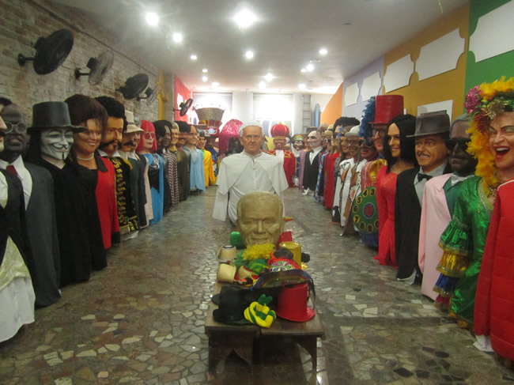

Embaixada de Pernambuco dos Bonecos Gigantes de Olinda
Famosíssimos pelas suas aparições marcantes nas festividades da região, os Bonecos de Olinda fazem a alegria dos foliões. Contudo, você não precisa esperar até o Carnaval para conhecê-los, pois os mesmos permanecem em exposição na Embaixada de Pernambuco - Bonecos Gigantes de Olinda.
A embaixada de Pernambuco dos Bonecos Gigantes de Olinda surgiu da grande necessidade do turismo de Recife e Olinda de possuir um espaço cultural estruturado a receber turistas e recifenses para contemplar a grande magia da nova geração dos Bonecos Gigantes o ano inteiro.
Acervo:
O espaço abriga a exposição permanente de 63 bonecos gigantes, dentre os 300 existentes desta nova geração que materializa ícones como: Alceu Valença, Michael Jackson, Chacrinha, Ayrton Senna, Chico Science, Domiguinhos, Luíz Gonzaga, Rita Lee, Lampião, Tim Maia, Silvio Santos, Mauricio de Nassau, Papa Francisco, Cartola, Joaquim Barbosa, Lulu Santos, Elvis Presley, Pelé, Neymar entre outros.
A visita é monitorada por um guia que expõe a origem da cultura dos Bonecos Gigantes além de explicar o processo de confecção e manipulação. O Ambiente possui bela cenografia além de contar com a loja de souvenires e escritório para a encomendas de miniaturas personalizadas e gigantes.
Acesso:
Endereço: R. do Bom Jesus, 183.
Valor de entrada: R$ 15 – adultos; crianças de até 12 anos acompanhada pelos pais não pagam.
Horário de funcionamento: diariamente, das 8h às 18h. Fechado apenas no carnaval (do sábado até a terça) e nos feriados de 25 de dezembro e 1º de janeiro.
Referências: